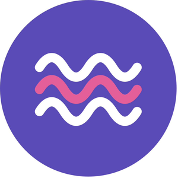
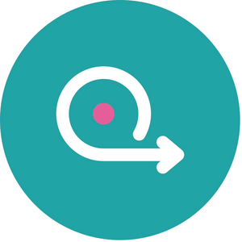

Cervical cancer screening and treatment, close to home.
CareVix brings cervical cancer screening, on-site triage and treatment of precancer to communities far from a laboratory, in a mobile unit or a fixed clinic.
In 2022, cervical cancer took the lives of 348,189 women.
Almost 94% of those deaths were in low- and middle-income countries. It is one of the most preventable cancers, but many women there cannot reach the services that would prevent it.
Three gaps stand between these women and care:
Results take weeks
Samples travel to a central laboratory. Many women cannot make the long journey back for their results and are lost before treatment.
Too few pathologists
Reading cytology needs trained cytotechnologists and pathologists, who are scarce and concentrated in city hospitals.
Manual staining varies
Pap staining by hand depends on timing and handling. Inconsistent slides are harder to read and less reliable.
Sources: Bray F. et al., Global cancer statistics 2022 (GLOBOCAN), CA Cancer J Clin, 2024. World Health Organization, Global strategy to accelerate the elimination of cervical cancer, 2020.
From self-sample to treatment
Follow a woman's sample from collection to care. Every step happens on site.
- 1 · Screen
Self-sample
A nurse explains how to take the sample. Each woman then collects a vaginal swab herself, in private.
- 2 · Screen
HPV test
The sample is tested for high-risk HPV, the cause of about 99% of cervical cancers. The WHO recommends HPV testing as the primary screening method. About 82% of women test negative and can go home.
- 3 · Triage
On-site Pap stain
A positive HPV result alone doesn't mean disease. To find out which women need treatment, we triage them with cytology: a nurse takes a cervical sample, and our automated stainer, GyroStainer, applies a Pap stain right where the sample was taken.
- 4 · Triage
Remote review
The slide is digitised and read by a pathologist through our telecytology platform, so the site doesn't need its own pathologist.
- 5 · Treat
Treatment on site
Women with precancerous lesions (CIN2 and CIN3) receive immediate treatment with thermal ablation. A probe heated to about 100 °C is applied to the cervix for 20 to 40 seconds at a time and destroys the abnormal cells. It usually needs no anaesthesia, and no trip to a city hospital.
- 6 · Refer
Referral when needed
Suspected cancers, and lesions that can't be treated with thermal ablation, are referred to a hospital for specialised care.
Two ways to run it
Both work in a mobile unit that travels between villages or in a fixed clinic. The right choice depends on how many women a site expects to see.

Wave
For places where many women come at once
- 90
- women screened per day
- 2
- days from screening to treatment

Loop
For smaller or more remote communities
- 20
- women screened per day
- 1
- day: screened and treated in the same visit
GyroStainer: lab-quality slides, outside the lab
Our compact auto-stainer processes up to four slides per run using standard beakers and open reagents. Our Pap protocol takes about 21 minutes. It was tested on patient slides at the Geneva University Hospitals.
GyroStainer is part of every CareVix setup and is also available on its own for cytology laboratories.

Who we work with
NGOs and health programmes
You know the communities and run the programmes. We bring the equipment, the workflow and remote review, and we plan the deployment together.
Request a quoteInvestors and funders
Every pilot site is a step toward eliminating a preventable cancer. Your support funds deployments, clinical validation and the next version of GyroStainer.
Support CareVixDeveloped with